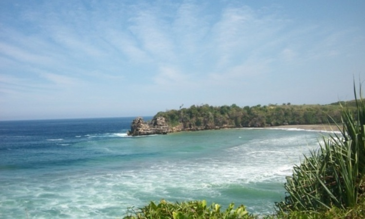
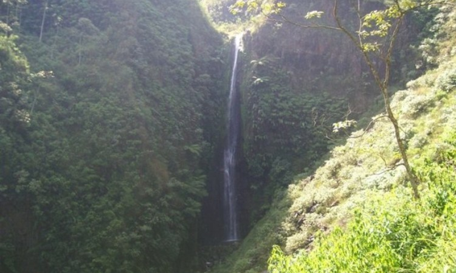

Jl. Ir. Soekarno No.152, Bendogerit, Sananwetan, Kota Blitar, Jawa Timur.
Tempat Wisata di Blitar ini akan kita mulai dengan makam tokoh besar negara kita. Seorang Presiden pertama sekaligus mengalami banyak masa dan cerita mengenai pergolakan negeri ini sampai merdeka. Beliau beristirahat dalam tenang di kota ini.
Desa Tambakrejo, Kec. Wonotirto, Kab. Blitar, Jawa Timur
Berbatasan langsung dengan Pantai Selatan membuat pantai yang satu ini memiliki karakteristik ombak yang cukup ganas. Serta lebih dalam dari Laut Utara yang ada di pulau Jawa. Akan tetapi pada pantai ini lebih mirip dan menyerupai dengan teluk sehingga ombak yang menerjang pantai ini lebih kecil.
Dusun Krajan, Desa Tumpakkepuh, Kec. Bakung, Kab. Blitar, Jawa Timur
Beberapa pantai yang ada di kota ini kebanyakan tersembunyi karena di kelilingi oleh perbukitan atau tebing tinggi yang mengitarinya. Sehingga wisatawan yang ingin mengunjungi tempat ini akan kesulitan untuk menemukan dan mencari tempat tersebut. Salah satu dari tempat tersebut adalah Pantai Pangi Blitar ini yah kawan.

Desa Serang, Kec. Panggungrejo, Kab. Blitar, Jawa Timur
Berbicara mengenai pantai yang ada di kota ini tentu tidak akan ada habisnya. Mengingat kota ini memiliki garis pantai yang cukup panjang jadi jangan heran jika banyak tempat wisata pantai pada daerah ini. Salah satu pantai yang akan kita bahas kali ini adalah Pantai Serang.

Slumbung, Gandusari, Blitar, Jawa Timur
Berbatas langsung dengan Laut Selatan Jawa bukan berati kota ini tidak memiliki air terjun. Di kota ini memiliki bebrapa air terjun yang bisa Anda nikmati pemandangan dan kesegarannya. Salah satu dari air terjun tersebut adalah Coban Wilis Blitar yang wajib Anda kunjungi.


.png)